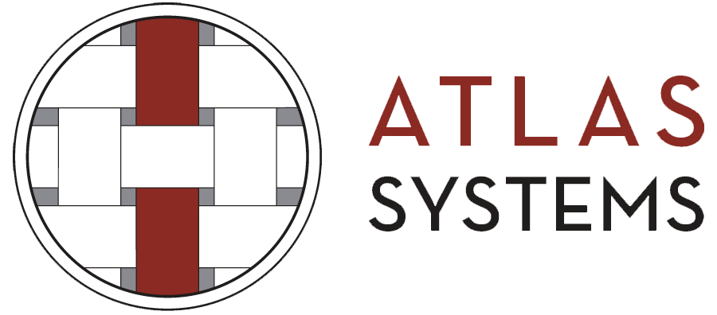
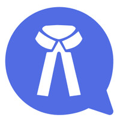
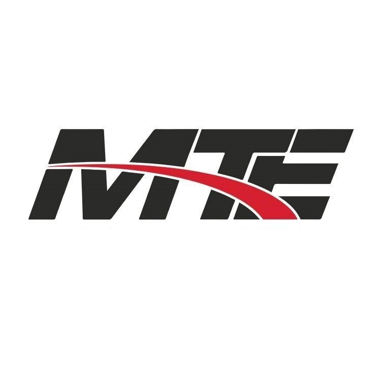
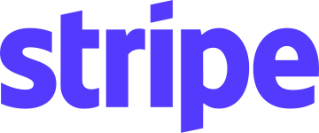

Email & ticket automation
Agents that read incoming messages, file them, catch duplicates and draft replies. ~70% less manual work in production.
Fits: support, IT services, logistics, insurance, SaaS
Srinivas Dharavath · Senior AI Engineer · IIT Madras · Hyderabad
One workflow, taken from the first conversation to something your team uses every day: the model, the database, the backend, the deployment and the monitoring. For teams in India, the US, the UK, Europe and the Gulf.
Worked with

Atlas Systems
Bluekyte.AI (Counsello AI)
MedTourEasyWhat I can build for you
Each one solves a problem most industries share. Tell me which one sounds like your team's week.
Agents that read incoming messages, file them, catch duplicates and draft replies. ~70% less manual work in production.
Fits: support, IT services, logistics, insurance, SaaS
Pull structured data out of PDFs, spreadsheets, scans and handwriting, across 10+ file formats.
Fits: finance, insurance, legal, healthcare admin, real estate
Chat with your company's documents, organized by department, with answers grounded in the source files.
Fits: agencies, consulting, legal, any document-heavy team
Outbound and inbound calls that hold a natural conversation, cope with interruptions and log every answer.
Fits: healthcare, research, real estate, hospitality, collections
Customer-facing assistants with strict output contracts, guardrails that escalate instead of guessing, fallbacks when models fail, and cost tracking per conversation.
Fits: healthtech, wellness, edtech, fintech apps
Agent teams that run multi-stage reviews, with a checking agent that validates each stage before the next.
Fits: fintech, banks, SaaS vendors, procurement
An ATS that runs from client and vendor onboarding through AI résumé screening to hiring, used by 60 people, and an HRMS for 600 employees with per-unit access control and AI attendance reports.
Fits: staffing and recruitment firms, HR teams, multi-entity groups
Measure and improve how ChatGPT, Claude and Perplexity describe your brand, with MentionNow, which I co-founded.
Fits: any brand, in any market
Selected work
Five systems I built end to end. The outcome is up front for founders; the drawing and decisions are there for engineers.
DWG 01HEALTHCAREIN TESTING WITH DOCTORS · BRIDGETOWN CONSULTING GROUP
PTBuddy helps people in the US manage physiotherapy between doctor visits. New users answer questions about their pain and habits, get a weekly exercise program built from a physiotherapist's video library, then log how the pain changes. The next week's program is re-ranked from what they report. Inside the app, an assistant called Anya already knows their history, so they can just ask. Its first rule is to escalate: anything beyond self-managed physio goes to a doctor, not a home remedy.
Full case study: next stepRole: AI, backend and infrastructure
SHEET 01 · WEEKLY LOOP
DWG 02RECRUITMENTLIVE · BRIDGETOWN CONSULTING GROUP
The recruitment teams worked across separate tools from the first client conversation to a candidate's first day. Now one system runs the whole pipeline: clients and vendors are onboarded, their requirements become open jobs, candidates are onboarded and their documents collected, AI screens résumés against each requirement, applications are submitted and tracked, interviews are scheduled, and the hired candidate is onboarded. Sixty people across the teams work in the same place instead of chasing each other for status.
Full case study: next stepRole: design, database, backend, deployment
SHEET 02 · HIRING PATH
DWG 03B2B SUPPORTATLAS SYSTEMS · 2024–26
The team read every email and call transcript by hand to open tickets under SLA. Now an AI workflow reads each message, files it, spots duplicates, links related tickets and drafts the reply. People review instead of retyping.
Full case study: next stepRole: AI/ML Engineer
SHEET 03 · MESSAGE PATH
DWG 04VOICE AIATLAS SYSTEMS · 2024–26
An outbound caller that asks survey questions in natural conversation, checks each answer, and copes when people interrupt or talk over it. The hard part was live-call behavior, so I tuned turn detection, interruption handling and transcription for real callers.
Full case study: next stepRole: AI/ML Engineer
SHEET 04 · CALL PATH
DWG 05LEGALBLUEKYTE.AI (COUNSELLO AI) · 2024
General models stumble on Indian legal language. I adapted LLaMA 3 8B with LoRA continual pre-training on 15 Indian law textbooks, from cleaning the text to a domain-adapted model.
Full case study: next stepRole: AI Engineer
SHEET 05 · TRAINING PATH
Figures marked ~ are estimates from internal logs and engineering measurements, not audited benchmarks. Ask me how any of them was arrived at.
How I build
Ways to work together
Most engagements start with a short, fixed-scope Sprint or Audit. What it finds decides whether there is anything worth building, and we scope the build from there.
2 weeks · fixed
For teams who know AI could help but not where to start.
2 weeks · fixedMost teams start here
For AI that already exists but is flaky, slow or expensive.
6 weeks · two-week loops
For one workflow, taken all the way to a monitored pilot.
Monthly
For founders who need a senior AI engineer, about a day a week.
A one-page report showing how ChatGPT, Claude and Perplexity describe your company next to your competitors. No call needed.
How I work
Working hours
I'm in Hyderabad (IST, UTC+5:30). Indian and Gulf teams share my whole day, Europe most of the afternoon, and US calls fit my evening.
Your 9:00–17:00, in ISTMy core hoursTimes as of late September; clocks change in Oct–Nov.
About
I trained as a naval architect at IIT Madras, where you design hulls to stay stable under loads you can't fully predict. Now I do the same for AI systems.
Over four years I've gone from AWS backends to fine-tuning LLaMA 3 on Indian law, and then to shipping agents, RAG and real-time voice AI for healthcare, recruitment, risk & compliance and enterprise teams. I own the whole path, from requirements and architecture to deployment and monitoring, and I track what matters after launch: latency, cost and failure rate.
I also teach AI/ML engineering to 800+ students at Masai School, and I co-founded MentionNow, which measures how AI engines talk about brands.
Outside work I make short films. The planning, the shot list and the edit turn out to need the same discipline as building a system.
Tools I ship with
 MCP
MCP Hugging Face
Hugging Face Python
Python FastAPI
FastAPI Django
Django PostgreSQL
PostgreSQL MongoDB
MongoDB Supabase
Supabase AWS
AWS Azure
Azure Docker
Docker Terraform
Terraform WhatsApp
WhatsApp
Stripe React
React Next.js
Next.jsGet in touch
Book a 30-minute call, or send a short brief. I reply within one business day with questions or a rough plan. Happy to sign an NDA first.